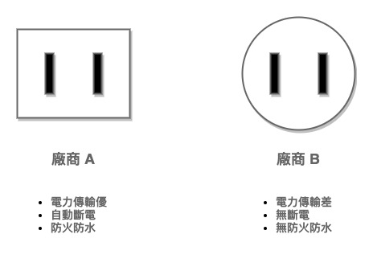

狗屎爛詞 Interface
狗屎爛詞系列專門介紹業界常使用的術語或名詞，但會以我所理解的概念去解釋，故無法保證正確性
若有發現不理解或錯誤的部分請留言讓我知道，以便修正更改。
簡介
介面（中國稱接口）屬於程式語言的一種特性，多數靜態語言都會有。
用專業點的說法是：「介面提供了抽象化的能力，可以隱藏底層的實作讓使用者專注於行為。」
介面是人們把「合約」或「規格」這種概念引入程式語言而產生，它本來就是我們生活中一項理所當然不過的事情，舉凡生活中處處可見的插座與插頭就是基於規格而生，下圖為 2018 的世界各地插座規格。

台灣使用 Type-A 規格插座，這代表人在台灣只要有 Type-A 的插頭你就不怕用不了電。
隱藏實作？
Implemet （實作）指的是製造符合介面定義的產物，介面允許了我們使用產品時不必在乎產品是什麼，這也是介面最大的優點。
假如現在要去英國，你會怎麼問插座的問題？
- 「英國使用的是哪個廠商的插座？」
- 「英國使用的是哪個 Type 的插座？」
正常情況都會選擇 2 的方式問，畢竟誰會特地調查要玩的地方插座由哪些供應商提供？
當有了規格，就很容易去應對會變化的未知，因為產品提供者不會只有一個，有時可能高達數百個。只要可以知道未知被侷限於某種限制，那就可以將其視為已知來應對，所以只要知道英國使用 Type-G 就可以只帶 Type-G 的轉接頭。
這也是介面提供抽象化能力的意思，因為每個實作都可能會有不同之處，只不過遵照著特定規格時就代表它們一定提供規格所指定的功能，不會出現號稱實作 Type-A 的插座卻插不了 Type-A 插頭的狀況。
1 | // SocketTypeA 規格 A 的插座 |
所以不同團隊之間撰寫程式合作時，其實也能透過雙方約定好的介面來工作，這樣不論哪方都不必等另一方完成才能作業，介面讓工作於未知變得可行。（當然，最終在整合時出問題的機率還是有的）
缺點
隱藏實作還是會造成一點問題，例如下圖。

上面的插座雖然有差別，但都可以插入 Type-A 的插頭，只是廠商 A 可能只要 30 分鐘就能充飽；廠商 B 花 2 小時不到一半，還燒斷電路。
因為實作被隱藏了，所以使用者在真正使用前無法得知結果是什麼，換句話說你可能插入插頭後發現：
- 沒充電
- 電路燒壞
- 冒出火花
- 其它
因為沒人能跟我們保證實作的正確性，所以人們習慣使用知名廠商的產品，比起聽都沒聽過的多數人都會買像是 Apple 、 Google 等大公司的產品，也就是更重視實作。
1 | // Adder 提供加法的介面，確保一定有 Add 功能 |
介面的問題
介面可以將未知的變化侷限使得人可以應對，卻也導致了一件事情 ———— 介面太過穩定。
等等，穩定難道不是一件好事嗎？
當然是好事，穩定的系統才可能長久。只不過程式絕對不可能永遠穩定，正如一個系統永遠存在著變化一樣，這時介面可能會因變化造成難以想像的劇痛。
假設未來有一種特殊的規格，可以提供最優秀的效率與最安全的防護，但與現在的所有插座、插頭都不一樣該怎麼辦？
除了將現有的所有插座、插頭全都更改或銷毀以外沒有辦法，因為當初的介面已經定死規格，所以規格發生變化就會造成大量的改動，拿台灣 2300 萬人口來計算，最少也有 5 倍以上的插座與插頭存在，這是多可怕的數字應不用言喻。
程式當然也是如此，如果有一個存在很久的介面：
1 | // Connector 必須提供 Connect 的功能 |
有不少廠商們都依此介面提供自己的實作，結果有一天發現介面要增加功能：
1 | // Connector 必須提供 Connect 的功能 |
我們先不討論這種改動和不合邏輯，當介面要加入新的功能或是方法就會造成所有實作毀壞，因為介面更改後原先的實作已不再符合規格。
結論
介面是程式語言將現實的規格概念引入的特性，提供了在未知情況下依然可以作業的能力，因為實作被隱藏後就不再是重點，可以專注於介面規格上，但太過穩定的介面會難以改動。